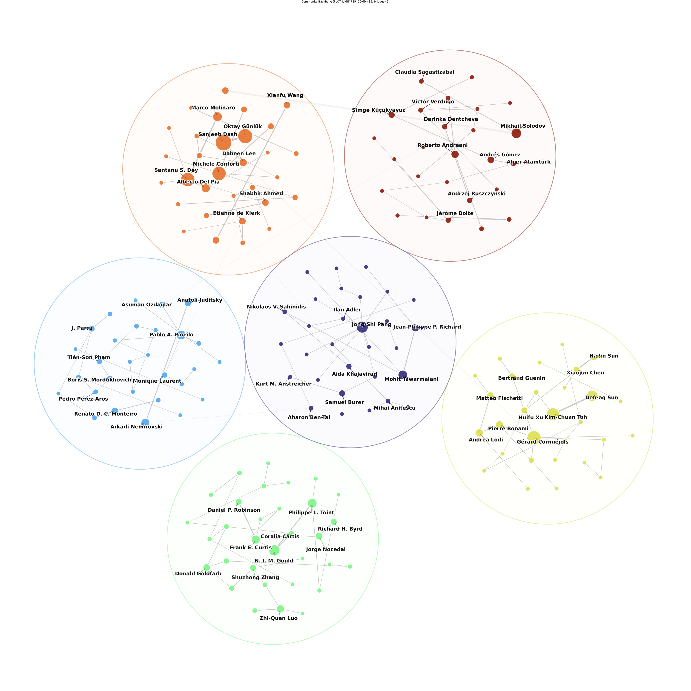
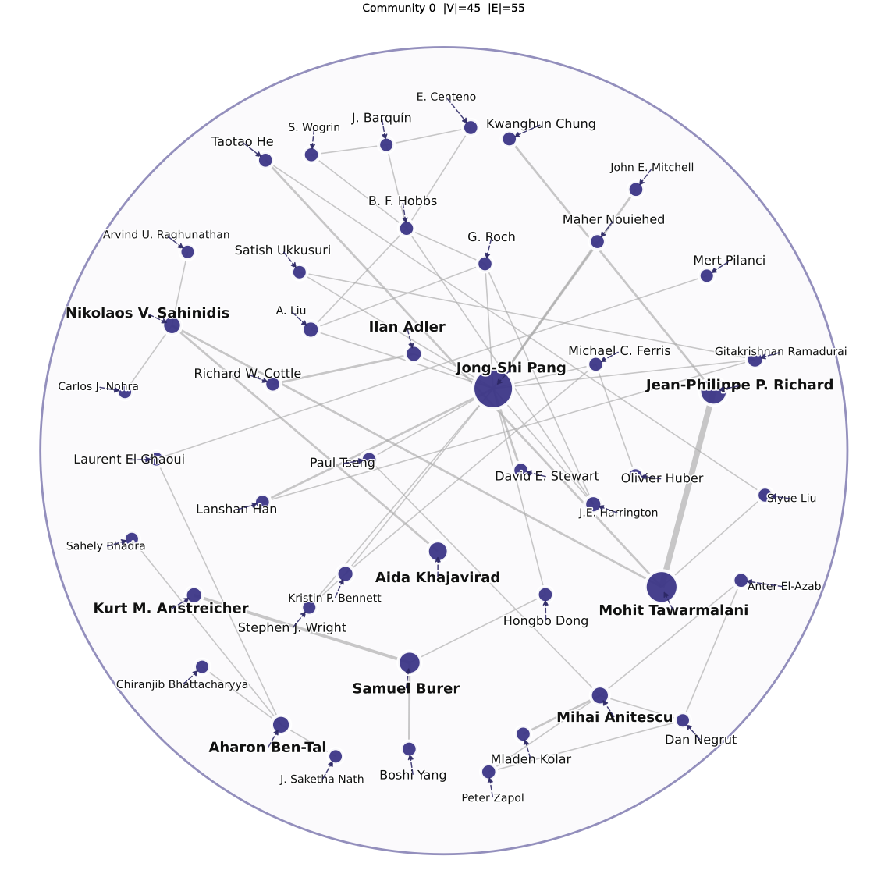

Project Detail
Turning 20 years of fragmented optimization literature into structured, queryable networks — spanning 17 journals, ~39K authors, and ~24K papers.
16 complete · 1 in progress · all top optimization venues
Unique authors identified across the full combined corpus
Articles scraped and structured from 17 optimization journals
Longitudinal records enabling analysis of how collaboration patterns evolved over time
Reference records scraped from 12 journals · reserved for future large-scale modeling
Publications are not isolated events — they form networks. Reframing the data this way makes it possible to study how research communities form, how collaboration evolves, and which structural patterns persist across journals and decades.
A reusable, structured network dataset with a reproducible pipeline — ready for downstream clustering, community detection, and longitudinal modeling of academic collaboration.
Beyond article metadata and authorship, the scraper also captured the full reference list of each paper. This yields a secondary corpus of ~550K reference records across 12 journals — not yet part of the current outputs, but preserved as a foundation for future large-scale modeling: cross-journal co-citation analysis, topic classification, and citation-based community detection. With each paper citing ~30–50 sources, the reference graph is substantially larger than the co-authorship network alone.


| Journal | Status | Articles | Authors | Note |
|---|---|---|---|---|
| SIAM Journal on Optimization | Complete | 2,798 | 1,931 | — |
| SIAM Journal on Control and Optimization | Complete | 3,395 | 2,221 | — |
| Computational Optimization and Applications | Complete | 2,950 | 1,696 | — |
| Applied Mathematics and Optimization | Complete | 1,897 | 1,090 | — |
| Optimization Letters | Complete | 2,408 | 1,231 | — |
| Mathematical Programming Computation | Complete | 586 | 258 | — |
| Mathematical Programming | Complete | 2,918 | 2,175 | — |
| Journal of Optimization Theory and Applications | Complete | 5,855 | 3,720 | — |
| Journal of Global Optimization | Complete | 791 | 301 | — |
| Journal of Combinatorial Optimization | Complete | 3,321 | 1,711 | — |
| Structural and Multidisciplinary Optimization | Complete | 6,168 | 3,027 | — |
| INFORMS Mathematics of Operations Research | Complete | 1,575 | 832 | — |
| INFORMS Journal on Optimization | Complete | 232 | 104 | — |
| Optimization | Complete | 1,328 | 1,456 | — |
| Optimization Methods and Software | Complete | 1,377 | 610 | — |
| Optimization and Engineering | Complete | 1,970 | 721 | — |
| Engineering Optimization | Pending | — | 1,346 | Reference data not yet scraped |